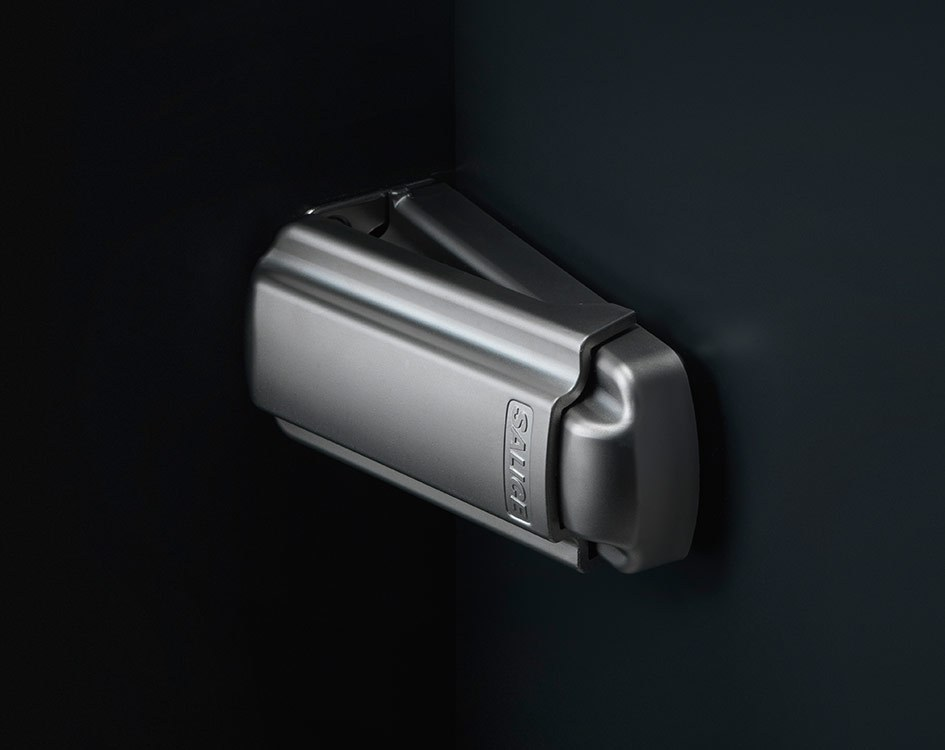

CREATURA
SALICE
06 / 22
Петли · с декоративными крышками

LAPIS
Series 200 · Series 700 · LAPIS Push
Петли с регулируемым встроенным доводчиком и декоративными крышками.
Открывание
94° · 110°
Фасады
средний вес, толщина 16–26 мм (Push — 19–35 мм)
Монтаж
Domi, продольные планки